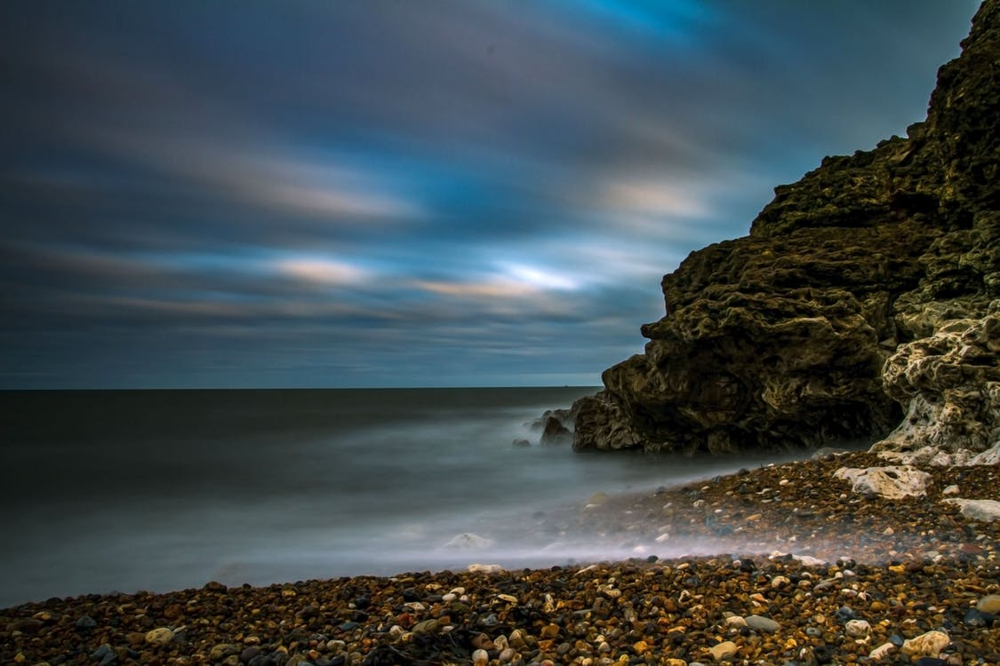

My name is S.M Isnain. I am currently in my first year
of my undergraduate study in Computer Science.
For
more information, please visit:
LinkedIn Profile
Life has became a lot busier now. Despite that, I still seem to enjoy it quite a lot. I believe that, having to meet the strict deadlines
have made me more responsible than before. The mere experience of being able to study with some of the most intelligent young minds
in the world simply uplifts the classroom experience. Great questions and detailed analysis of every topic by students in
classrooms makes me want to learn more and think more deeply about everything.
Everyone here is so enthusiastic about
what they learn that, one will find oneself deeply engrossed in thinking about assignment problems whilst also enjoying it,
when he or she is in the presence of such wonderful peers.
Here are some things that I do when I am not studying.
Below is a table of foods that I eat often.
| Foods that I eat | Time of consumption during day |
|---|---|
| Corn flakes with milk | 9:00 a.m in the morning |
| White bread with hazelnut spread | 2:00 p.m in the afternoon |
| Fettucine with vegetables | 6:00 p.m in the evening |
| Rice with fried eggs and vegetables | 10:00 p.m in the night |
Source:
Pexels (licensed under CC0)

Source:
Pexels (licensed under CC0)
Pexels Photo License
The population density here in Waterloo seems too low to me. All my life, I have been used to living in a much busier and livelier city and I really love that way of life. Whenever my mood was down, I used to go out for a short walk. Simply watching other people having so much fun on the streets uplifted my mind and it was not long before I forgot all my worries.
If I had the chance to live in a city like the one in the video below, I would actually be living my dream.
Source: Pexels (licensed under CC0)Thank you for visiting my website.